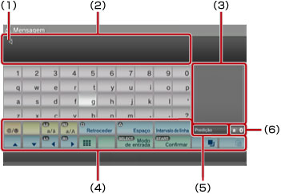
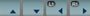
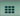
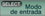
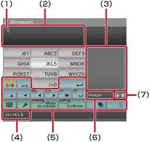
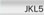
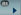
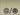
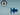
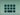

Sobre o menu XMB™ > Utilizando o teclado
Utilizando o teclado
O teclado será exibido automaticamente sempre que a entrada de texto for necessária. Estas instruções supõem o uso do teclado inglês. Para informações sobre como utilizar teclados de outro idioma, veja o guia do usuário para o respectivo idioma.

(1) |
Cursor |
|---|---|
(2) |
Campo de entrada de texto |
(3) |
Exibe as opções preditivas |
(4) |
Teclas de operação |
(5) |
Exibe quando o modo preditivo está ativado |
(6) |
Mostra o modo de entrada |
Lista de teclas
As teclas exibidas variam dependendo do modo de entrada e de outras condições.
 |
Insere um símbolo ou um emoticon |
|---|---|
 |
Muda o tipo de caractere a ser inserido |
 |
Move o cursor |
| Exclui o caractere à esquerda do cursor | |
| Insere um espaço | |
| Insere uma quebra de linha | |
 |
Copia ou cola o texto |
 |
Muda para o miniteclado |
 |
Alterna o modo de entrada |
 |
Confirma os caracteres que foram digitados, mas não inseridos / Sai do teclado |
Inserindo caracteres
Utilizando o modo preditivo, você pode inserir as primeiras letras da palavra, o que exibirá uma lista das palavras mais utilizadas que iniciam com estas letras. Então, você poderá utilizar os botões de direção para selecionar a palavra desejada. Depois de terminar de inserir o texto, selecione a tecla "Enter" para sair do teclado.
Dicas
- Você pode não conseguir utilizar os emoticons em alguns modos de entrada.
- Os idiomas que você pode utilizar para a entrada de texto são os idiomas suportados pelo sistema. Por exemplo, se o idioma do sistema estiver definido como francês, você poderá inserir o texto em francês. Você pode definir o idioma do sistema em
 (Configurações) >
(Configurações) >  (Configurações do sistema) > [Idioma do sistema].
(Configurações do sistema) > [Idioma do sistema]. - Você pode limpar todo o campo de entrada de texto pressionando os botões
 + L1 ao mesmo tempo.
+ L1 ao mesmo tempo.
Utilizando um teclado conectado
Você pode inserir o texto utilizando um teclado USB ou um teclado Bluetooth® (ambos vendidos separadamente). Com a tela de entrada de texto exibida, ao pressionar qualquer tecla no teclado conectado, a tela de entrada de texto permitirá que você utilize o teclado conectado.
Dicas
- Para detalhes sobre como conectar um teclado Bluetooth®, veja (Configurações) >
 (Configurações de acessórios) > [Gerenciar dispositivos Bluetooth®] neste guia.
(Configurações de acessórios) > [Gerenciar dispositivos Bluetooth®] neste guia. - Você não poderá utilizar o modo preditivo se estiver utilizando um teclado conectado.
- Você pode inserir uma quebra de linha no campo de entrada de texto pressionando ALT + ENTER. Você poderá inserir uma quebra de linha apenas quando for aplicável, como, por exemplo, ao escrever uma mensagem na categoria
 (Amigos).
(Amigos). - Você pode limpar o campo de entrada de texto inteiro pressionando SHIFT + BACKSPACE ao mesmo tempo.
- Você pode colar o texto que foi copiado pressionando Ctrl + V. O texto que foi copiado por último será colado.
Utilizando o miniteclado
Se você selecionar no teclado de tamanho normal, ele mudará para o miniteclado. No miniteclado, diversos caracteres são atribuídos a uma única tecla.

(1) |
Cursor |
|---|---|
(2) |
Campo de entrada de texto |
(3) |
Exibe as opções preditivas |
(4) |
Exibe os caracteres que podem ser inseridos utilizando a tecla selecionada.  e pressione o botão seis vezes. Para inserir [L5], selecione e pressione o botão e, após [L] ter sido inserido, utilize seis vezes. Para inserir [L5], selecione e pressione o botão e, após [L] ter sido inserido, utilize  para mover o cursor, de modo que ele seja posicionado após o [L]. Então, selecione e pressione o botão sete vezes para inserir [5].
|
(5) |
Teclas de operação |
(6) |
Exibe quando o modo preditivo está ativado |
(7) |
Mostra o modo de entrada |
Dica
Você também pode utilizar o método de entrada de texto com um toque. Utilize a tecla "Opções" para mudar o método de entrada de texto. Ao utilizar o toque, as palavras que podem ser criadas utilizando as combinações feitas com uma letra (ou número) em cada tecla selecionada são exibidas como opções de entrada de texto preditivas. Por exemplo, ao selecionar a tecla "DEF3", as palavras que começarem com d, e, f ou 3 serão listadas na janela de opções preditivas no lado direito do teclado na tela. Se o símbolo ">" for exibido, continue inserindo letras até que as opções preditivas sejam exibidas.
Lista de teclas
As teclas exibidas variam dependendo do modo de entrada e de outras condições.
 |
Insere um símbolo |
|---|---|
| Alterna entre maiúsculas e minúsculas | |
| Insere uma quebra de linha | |
| Move o cursor | |
 |
Exclui o caractere à esquerda do cursor |
| Insere um espaço | |
|
Copia ou cola o texto |
 |
Muda para o teclado de tamanho normal |
| Exibe o menu de opções | |
| Alterna o modo de entrada | |
| Confirma os caracteres que foram digitados, mas não inseridos / Sai do teclado |